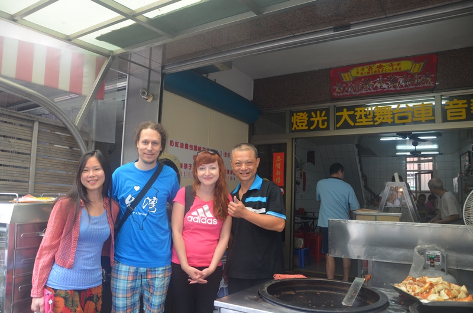
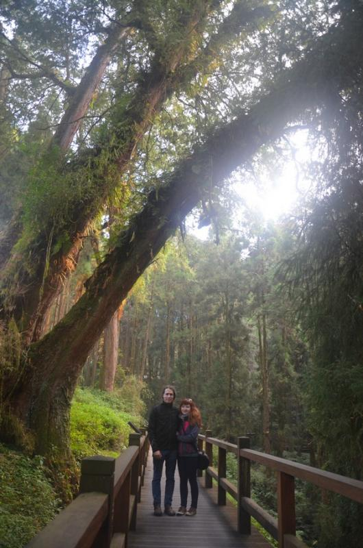
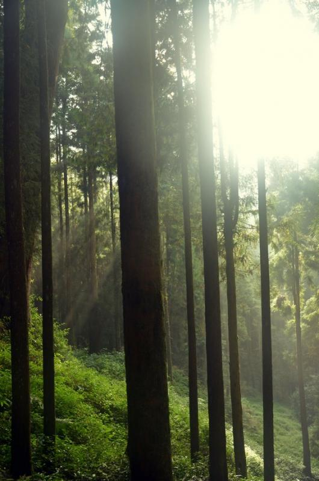
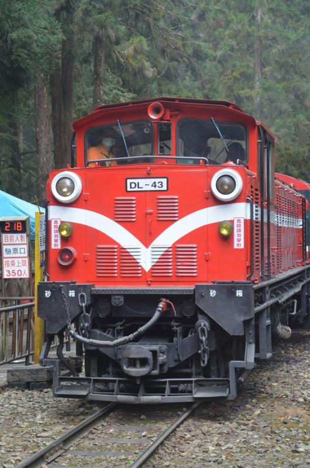
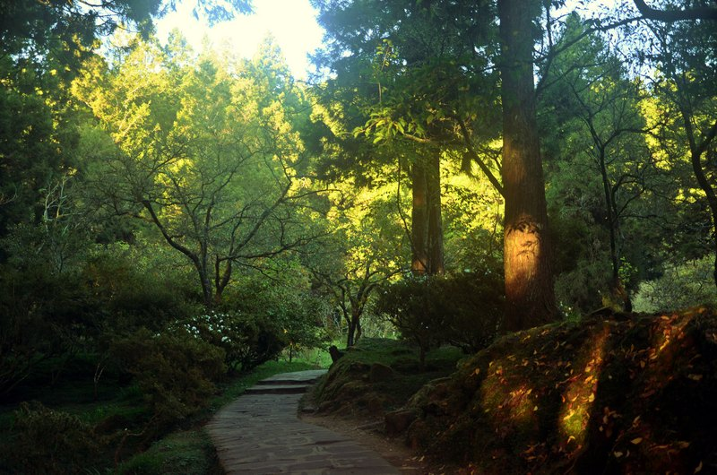
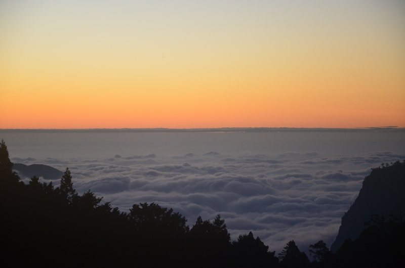
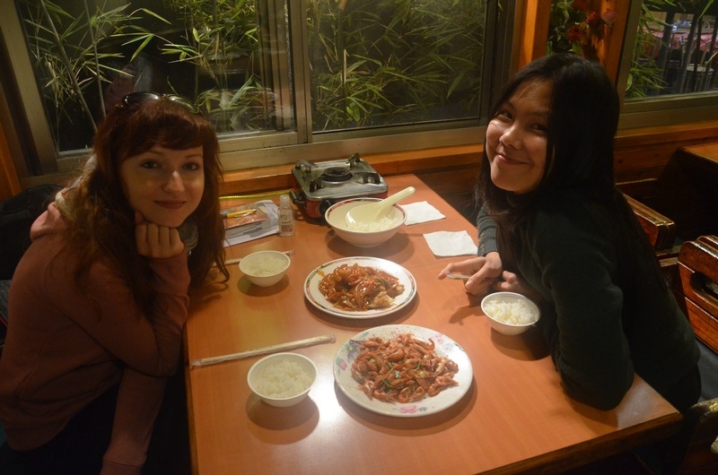

Ráno v Xinjingu nás čekalo překvapení - Mendy dorazila na naši smluvenou společnou snídani i se sbaleným batohem :-D! Zbývalo jí ještě několik dnů dovolené, a tak nás mohla doprovodit na naší cestě až do Puli, odkud se pak chtěla vrátit do Taipei, kde pracuje v divadle. Vyrazili jsme tedy nejprve trochu se posilnit. Xinjing je menší město, o které turista (natož Evropan) asi běžně nezakopne, takže jsme tu právem způsobili menší pozdvižení :-D. Mendy nás vzala do své oblíbené snídaňové restaurace, kde jsme si dali čaj se sójovým mlékem (které jsem si na Taiwanu opravdu zamilovala), vajíčka a další druh plněných knedlíčků. Personál z nás byl docela paf a na cestu nám ještě vnutili polívku a požádali o společné foto. Prostě sranda :D!

Pozdvižení v Xinjing
Po snídani jsme vyrazili na cestu do národní krajinné oblasti Alishan. Čekalo nás opět stoupání do hor a silnice plná serpentin. Z výchozí nadmořské výšky 300 m malebná krajina o rozloze 327 km2 rychle vystoupá do výšek přes 2600 m! Nebylo divu, že se nám během dne postupně všem udělalo špatně - to převýšení sice není tak dramatické, ale zato k němu dojde dost prudce. Obrovská rozdílnost klimatu, půdy a krajiny zde umožňuje pěstování čehokoliv od wasabi až po vysokohorský čaj oolong, který prý patří k nejlepším na světě.

Alishan
Kolem poledne jsme dorazili do cíle naší cesty - lesní rezervace Alishan. Vysokohorské středisko Alishan je předním turistickým tahákem už od 20. let minulého století. K místním raritám patří třeba kouzelná úzkokolejná železnice, ale také překrásné východy a západy slunce a úkaz, kterému se říká “moře mraků”. O tom ale později.

Lesní rezervace
Vzhledem k tomu, že Péťovi s Mendy bylo po cestě celkem špatně, oběd jsme pořešili jen lehkým snackem v místním Family Marketu. V turistickém centru jsme si nechali poradit trasu, převlékli se do teplejšího oblečení, protože na teplotě vzduchu bylo znát, že rána a večery tu budou pěkně chladné, a rovnou vyrazili na železniční stanici.
Alishanský lesní vlak se pohybuje po úzkokolejné trati, na které je použit jedinečný systém serpentin, který umožňuje zdolat svahy, které jsou normálně pro vlaky příliš prudké.

Naše mašinka
Úzkokolejkou jsme se tedy vypravili na asi 20 minut vzdálenou Stezku obrovských stromů. Na této túře můžete obdivovat kouzelné majestátní cypřiše, z nichž spousta je stará více než 2000 let!! Uniknout na chvíli z věčně přelidněných asijských ulic do ticha a zeleně lesa je to nejlepší, co můžete tady v Alishanu udělat.

A nikde ani živáček
Přestože túra nebyla nijak náročná, k večeru dolehla “vysokohorská” nemoc i na mě. To už jsme naštěstí byli skoro v cíli cesty a v záři zapadajícího slunce jsme uviděli “moře mraků” - nepopsatelný fascinující úkaz, pro který stálo zato dojet až sem!

Moře mraků
Po návratu do turistického střediska jsme se nejprve vydali hledat hotel, kde dnes přenocujeme, a vzápětí i nějakou příjemnou restauraci. Tady jsme objevili naši novou gastro-závislost: maličké říční krevetky, které se nemusí loupat. Ty jsme si pak nakoupili i jako suvenýry domů do ČR. Vyzkoušeli jsme tu také rybu ve sladkokyselé omáčce nebo třeba mořskou trávu.

Mňamka!
A po večeři rovnou do postele! To abychom na druhý den nezaspali to, za čím do Alishanu přijíždí turisté z celého světa - překrásný východ slunce nad vrcholem Chushanu.